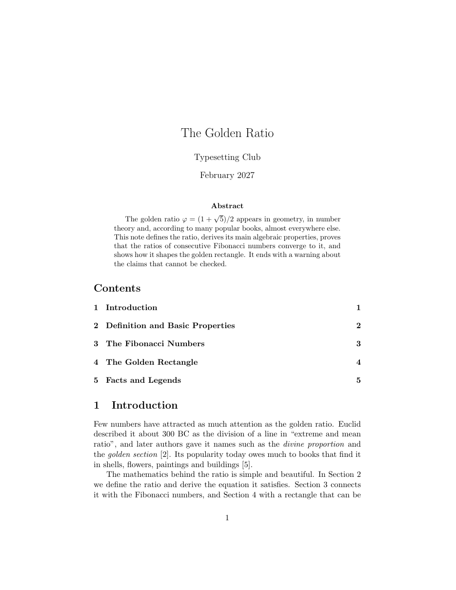
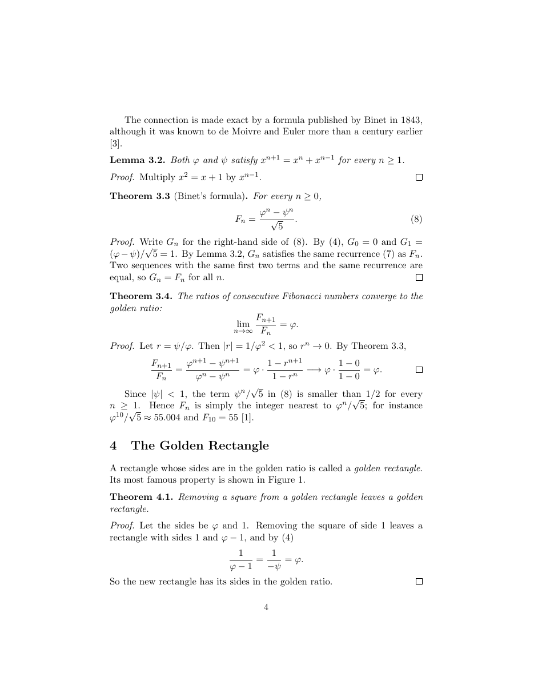

ภาพรวม
โครงงานเป็นงานเดี่ยว คิดเป็น 25 คะแนนของรายวิชา นักศึกษาเลือกหัวข้อเองได้อย่างอิสระ เช่น เรื่องจากวิชาเอกของตนเอง รายงานการทดลอง หรือบันทึกทางคณิตศาสตร์สั้น ๆ แล้วจัดทำงาน 3 ชิ้นจากหัวข้อเดียวกัน
| ชิ้นงาน | รายละเอียด | คะแนน |
|---|---|---|
| เอกสาร | คลาส article หรือ report ยาว 6–10 หน้า มีองค์ประกอบครบตามหัวข้อถัดไป | 15 |
| สไลด์ | คลาส beamer สร้างจากเนื้อหาของเอกสาร | 5 |
| การนำเสนอ | นำเสนอ 5 นาที ตอบคำถาม 3 นาที ในชั้นเรียน | 5 |
เขียนเป็นภาษาไทยหรือภาษาอังกฤษก็ได้ สไลด์ใช้ภาษาเดียวกับเอกสาร เอกสารภาษาไทยต้องใช้ thaispec และคอมไพล์ด้วย xelatex ตามที่เรียนใน Workshop เอกสารภาษาไทยและคำสั่งที่สร้างเอง
ดูตัวอย่างโครงงานที่มีองค์ประกอบครบได้ที่ doc.pdf (บทความภาษาอังกฤษเรื่อง The Golden Ratio ยาว 6 หน้า) ตัวอย่างนี้ให้ดูรูปแบบเท่านั้น ไม่มีไฟล์ต้นฉบับให้


สิ่งที่เอกสารต้องมี
เอกสารต้องมีองค์ประกอบทุกข้อต่อไปนี้ ใช้รายการนี้ตรวจงานของตนเองก่อนส่ง
ไฟล์ที่ได้รับ
ดาวน์โหลด project.zip แล้วแตกไฟล์ จะได้โฟลเดอร์ project ที่เป็นโครงของงาน คอมไพล์ได้ทันทีแต่ยังไม่มีเนื้อหา
project/
├── doc.pdf ตัวอย่างโครงงาน (ดูรูปแบบเท่านั้น)
├── main.tex ไฟล์หลัก ส่วนนำ คำสั่งที่สร้างเอง และการเรียกไฟล์ย่อย
├── sections/
│ ├── introduction.tex บทนำ
│ ├── body.tex เนื้อหาหลัก (แบ่งเป็นหลายไฟล์เพิ่มได้)
│ └── conclusion.tex บทสรุป
├── refs.bib ฐานข้อมูลบรรณานุกรม (มีตัวอย่าง 1 รายการ)
├── figures/ โฟลเดอร์สำหรับรูปภาพ
├── slides.tex โครงสไลด์ beamer สำหรับการนำเสนอ
└── Laksaman.fontspec ใช้เมื่อเขียนเอกสารภาษาไทยดูไฟล์แยกได้ที่
main.tex,
slides.tex,
refs.bib
คอมไพล์ด้วยคำสั่งต่อไปนี้ (เอกสารภาษาไทยให้ลบ % หน้าบรรทัด thaispec ใน main.tex ก่อน)
$ latexmk -pdf main.tex # เอกสารภาษาอังกฤษ
$ latexmk -xelatex main.tex # เอกสารภาษาไทย
$ latexmk -pdf slides.tex # สไลด์กำหนดการ
| วันที่ | สิ่งที่ต้องทำ |
|---|---|
| จันทร์ 1 ก.พ. 2570 | แจ้งหัวข้อและชื่อเรื่องโครงงานกับผู้สอนในชั้นเรียน (ไม่มีคะแนน แต่ต้องทำ) |
| ศุกร์ 26 ก.พ. 2570 เวลา 23.59 น. | ส่งไฟล์ project_<รหัสนักศึกษา>.zip ที่มีเอกสาร สไลด์ และไฟล์ต้นฉบับทั้งหมด |
| จันทร์ 1 มี.ค. 2570 | นำเสนอในชั้นเรียน คนละ 5 นาที ตอบคำถาม 3 นาที ใช้สไลด์ฉบับที่ส่งแล้ว |
การส่งงาน
- เปลี่ยนชื่อโฟลเดอร์
projectเป็นproject_<รหัสนักศึกษา>(ไม่ต้องเปลี่ยนชื่อไฟล์ข้างใน) - ลบไฟล์ที่เกิดจากการคอมไพล์ด้วย
latexmk -c main.texและlatexmk -c slides.tex(เก็บ PDF ไว้) - ตรวจว่ามี
main.pdf,slides.pdf, ไฟล์.texทั้งหมด,refs.bibและรูปภาพทุกรูป - บีบอัดโฟลเดอร์เป็น
project_<รหัสนักศึกษา>.zipแล้วส่ง
latexmk ใหม่ ถ้าคอมไพล์ไม่ผ่าน เช่น ขาดรูปภาพหรือไฟล์ย่อย จะเสียคะแนนคุณภาพการเรียงพิมพ์ ลองทำแบบเดียวกันกับไฟล์ zip ของตนเองก่อนส่ง
เกณฑ์การให้คะแนน
เอกสาร 15 คะแนน
| ด้าน | สิ่งที่ตรวจ | คะแนน |
|---|---|---|
| องค์ประกอบ | มีครบตามรายการในหัวข้อ สิ่งที่เอกสารต้องมี (หักตามข้อที่ขาดหรือใช้ไม่ถูกต้อง) | 8 |
| คุณภาพการเรียงพิมพ์ | คอมไพล์ใหม่ได้จากไฟล์ที่ส่ง ไม่มีข้อผิดพลาด ไม่มี Overfull \hbox ไม่มี ?? หรือคีย์อ้างอิงตัวหนา และใช้รูปแบบสม่ำเสมอทั้งเล่ม | 4 |
| เนื้อหาและการเรียบเรียง | ลำดับหัวข้อสมเหตุสมผล เขียนชัดเจน รูปและตารางสื่อความหมาย และอ้างอิงแหล่งข้อมูลตรงจุด | 3 |
สไลด์ 5 คะแนน
| ด้าน | สิ่งที่ตรวจ | คะแนน |
|---|---|---|
| สอดคล้องกับเอกสาร | เนื้อหามาจากเอกสารของตนเอง | 1 |
| โครงสร้าง | มีหน้าชื่อเรื่อง สารบัญ และแบ่ง \section | 2 |
| ความสามารถของ beamer | ใช้การแสดงผลทีละส่วน การจัดคอลัมน์ หรือกล่องเน้นเนื้อหาอย่างเหมาะสม | 1 |
| อ่านง่าย | ตัวอักษรไม่แน่นหรือล้นกรอบ และอ่านได้จากหลังห้อง | 1 |
การนำเสนอ 5 คะแนน
| ด้าน | สิ่งที่ตรวจ | คะแนน |
|---|---|---|
| เวลา | นำเสนอจบภายใน 5 นาที | 1 |
| ความชัดเจน | อธิบายหัวข้อและผลหลักให้ผู้ฟังเข้าใจ | 2 |
| การตอบคำถาม | ตอบคำถามเรื่องเนื้อหา และอธิบายโค้ดส่วนใดก็ได้ในไฟล์ .tex ของตนเองที่ผู้สอนเลือก | 2 |
AI และข้อมูลส่วนตัว
โครงงานนี้ใช้แชตบอต AI ช่วยได้ ตามหลักในบทเรียน Typesetting with AI Assistance และ Workshop ร่างเอกสารโดยมี AI ช่วย โดยมีเงื่อนไขดังนี้
- เขียนหัวข้อ AI Use Statement ท้ายเอกสาร บอกว่าใช้เครื่องมือใด ใช้ทำอะไร และตรวจสอบอะไรด้วยตนเอง ถ้าไม่ได้ใช้ให้เขียนว่า No AI tools were used to write this document
- นักศึกษาเป็นผู้รับผิดชอบทุกบรรทัด รวมถึงส่วนที่ AI เขียน ในการตอบคำถามระหว่างนำเสนอ ผู้สอนอาจขอให้อธิบายโค้ดส่วนใดก็ได้
- ตรวจทุกแหล่งในบรรณานุกรมว่ามีอยู่จริง เพราะ AI อาจแต่งหนังสือ บทความ หรือ DOI ขึ้นเอง
- ห้ามวางรหัสนักศึกษา ชื่อ-นามสกุล หรือข้อมูลส่วนตัวของผู้อื่นลงในแชต
ปัญหาที่พบบ่อย
| อาการ | สาเหตุและวิธีแก้ |
|---|---|
! LaTeX Error: File `sections/....tex' not found. |
ชื่อไฟล์ใน \input ไม่ตรงกับไฟล์จริง หรือไฟล์ไม่ได้อยู่ในโฟลเดอร์ sections |
| รูปภาพหาไม่พบหลังแตกไฟล์ zip | รูปอยู่นอกโฟลเดอร์ของโครงงาน ย้ายรูปทุกรูปไว้ใน figures/ |
การอ้างอิงเป็นคีย์ตัวหนา หรือมี ?? |
ใช้ latexmk แทนการสั่ง pdflatex เอง และตรวจว่าชื่อใน \cite, \ref ตรงกับ refs.bib และ \label |
| ตัวอักษรไทยหายหรือเป็นสี่เหลี่ยม | ยังไม่ได้เปิดบรรทัด thaispec หรือคอมไพล์ด้วย -pdf แทน -xelatex และต้องมี Laksaman.fontspec ในโฟลเดอร์ |
Overfull \hbox ในย่อหน้าหรือตาราง |
ดูหมายเลขบรรทัดในข้อความเตือน แล้วเรียบเรียงประโยคใหม่ ลดความกว้างของรูปหรือคอลัมน์ หรือใช้คอลัมน์ p{...} |
แหล่งอ้างอิง
- สไลด์บทเรียนทุกบท โดยเฉพาะ Document Structure, Citations and Bibliography, Presentations with Beamer และ Thai, Macros and Large Documents
- Workshop ที่ผ่านมาทั้งหมด ใช้ชิ้นงานและไฟล์ของตนเองเป็นตัวอย่างได้
- The Not So Short Introduction to LaTeX (เปิดด้วย
texdoc lshort)